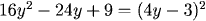
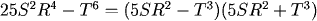
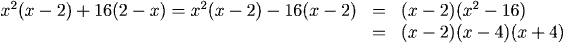

Factoring Quadratics
One way to factor quadratics is to mentally multiply out the possible ways of factoring them. We can do this because we know that when we multiply out the factors, we have to get the appropriate terms in the quadratic:
\(x^2-5x-6=(x+?)(x+?)\)
We know we have to have the "\(x\)"s to give the factor of \(x^2\) . Then we're looking for two numbers whose product is -6 and whose sum is -5.
By trying combinations of the possibilities to give the product -6 (-2,3; 2,-3; -1,6; 6,-1), we come up with the answer:
\(x^2-5x-6=(x-6)(x+1)\)
Examples


1.
2.
3.
Perfect Squares and The Difference of Squares
Recognition of the special producs in expanded form is useful in factoring: reversing the results in the previous section, we have the following rules.Special Products:
\(a^2+2ab+b^2=(a+b)^2\)
\(a^2-2ab+b^2=(a+b)^2\)
\(a^2-b^2=(a+b)(a-b)\)
\(a^2-2ab+b^2=(a+b)^2\)
\(a^2-b^2=(a+b)(a-b)\)
When we can see that terms in an expression we want to factor are squares, we look for these special cases. The difference of squares (special product 3) is especially useful.
Examples


Sometimes it is useful to substitute to more clearly see the quadratic form being factored. For example, consider \(z^{2/3}-z^{1/3}-6\). To see the quadratic, substitute \(u = z^{1/3}\) . Then
1.
2.
3.
4.
5.

\(z^{2/3}-z^{1/3}-6 = u^2-u-6=(u-3)(u+2)\)
Then rewrite this in terms of \(z\) using \(u =z^{1/3}\) :
\(z^{2/3}-z^{1/3}-6 = (z^{1/3}-3)(z^{1/3}+2)\)
Practice
Return to Main